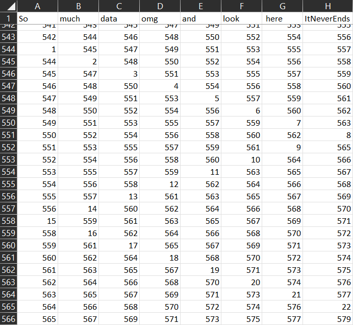
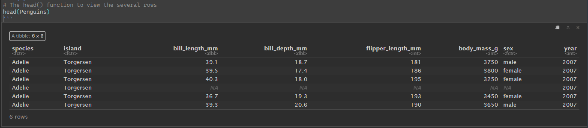
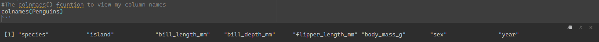

2.1 Excel vs. R and why we should care
Excel vs R
When choosing between R and Excel, it is important to understand how both solutions can get you the results you need. However, one can make it an easy, reputable, convenient process, whereas the other can make it an extremely frustrating, time-consuming process prone to human errors.
When opening Excel and applying data manipulation techniques to your data, are you easily able to tell what manipulations have been made without clicking on the column or cells? If you were to share these Excel sheets with colleagues are they easily able to replicate your analyses without you telling them where to click or which formulas were applied?
With R all of these are possible. You automatically have all the code visible and in front of you in the form of scripts. Reading and understanding the code is possible because of its easy-to-use, easy-to-read syntax which allows you to track what the code is doing without having to be concerned about any hidden functions or modifications happening in the background.
When we consider our programming methods, we must strive for two goals: simple and reproducible. R makes both of these goals achievable.
Let’s keep talking about this
I want to inform you of something. This is entirely objective and bias-free (as if that is even possible).
Let’s talk excel data sheets for a moment. Excel has some great features. The most flexible of these is the cell. An excel cell can be extremely flexible as they can store various data types (numeric, logical, and characters).
This is great! We can store our data here in a nice and organized manner and scroll through and view it all with relative ease.
Not so fast. Lettuce think about a data set with 5,000 or 20,000, or 100,000, or 500,000, or 1,000,000 rows and 100+ columns. Now. Imagine scrolling through all of this looking for errors. Or double checking formulas written within new columns. Imagine saving this file over and over upon each rendition. What were to happen if an error was missed after formula was run and you continued to work and save new files? This could mean big trouble when it came time for a real analysis. Personally, that sounds like a nightmare.

Now that I got that off my chest. Let’s chat about R. Within R are some great options for viewing our data. We can look in our environment. We can call certain base R functions (See functions section here) to view different sections.
Here are some examples of these functions.
The structure (str) to view the nature of our data set.

The head function to view the first several rows of a data set.

The tail function to view the last several rows of our data set.

The colnames function to view the names of our columns.

As we are starting to see, when compared to Excel with examples of only viewing data, R is beginning to appear more versatile. We will continue to build on the capabilities of R in future sections and work through functions, etiquette, data wrangling, plotting, and much more.